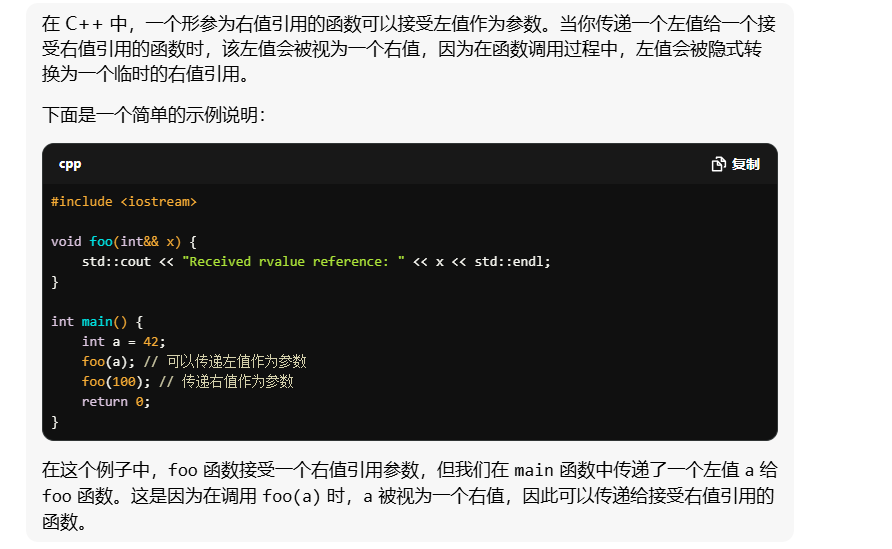
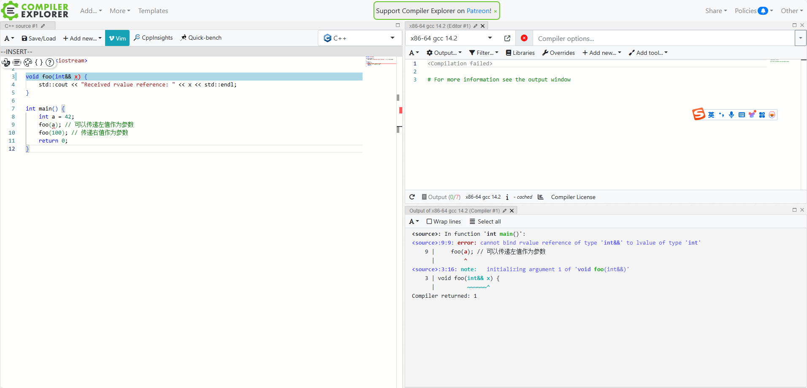

本书主要设计 C++11/14 的新语言特性，Modern C++ 带来的各种改变是亡羊补牢，还是脱胎换骨，通过阅读本书可能会得到答案。
不得不说 C++11 之后的语言特性理解难度越来越高了，完全理解并作出比作者还高效精炼的总结实在是太困难，写作难度相比写《Effective C++》读书笔记的时候大大提高了。
看书是一件乐趣，写读书笔记可不是😢。但是就阅读《Effective C++》的经历而言，减慢阅读速度而留下记录是很重要的，不知本篇何时才能完成。
ps: 电力出版社的高博版翻译的错误实在有点多，正文中我看出来的已经更正 (隐式的)。同时本文涉及到的很多 C++ 新概念的详细语法和使用并不会解释。
在学习的过程中，非常推荐使用在线编译器 Compiler Explorer 以及 AI 问答工具快速验证想法。比如直接询问 gpt：一个形参为右值引用的函数 给他传参的时候可以传左值吗？
对此 gpt 给出的答案是 可以 ，并提供了一个例子

但是实际上，compiler 给出的答案是否定的，所以，gpt 很好用，但验证还是有必要的。

# chapter 1 类型推导
# item1 理解模板类型推导
模板类型推导，是 C++ 一个广泛应用的特性，并且可以被称为一个良好的设计，因为很多程序员都在完全不了解其底层运行机制的情况下，获得了满意的结果。C++ 11 带来了 auto ，模板类型推导也是其运行的基础，一个坏消息是有些时候它的应用并不符合直觉，因此了解模板类型推导的一些细节就有些重要了。
考虑如下一个函数模板：
template<typename T> | |
void f(ParamType param) |
这里的 ParamType 是与 T 有关的一个类型，比如 const T , T & 等
对于某一次调用 f(expr) , T 的推导结果会是什么呢，答案是，既与 expr 的类型有关也和 ParamType 有关，具体要分为三种情况讨论。
# 情况 1： ParamType 是一个指针或引用，但不是一个万能引用
这种情况下，类型推导会这样运作：
- 若 expr 具有引用类型，先将引用部分忽略
- 然后，对
expr的类型和ParamType的类型执行模式匹配，来决定 T 的类型。
for example:
// 对与如下模式 | |
template<typename T> | |
void f(T& param) //param 是一个引用 | |
int x = 27; | |
const int cx = x; | |
const int& rx = x; | |
f(x); //T 是 int，param 的类型是 int& | |
f(cx); //T 是 const int，param 的类型是 const int& | |
f(rx); //T 是 const int，param 的类型是 const int& |
这些例子只展示了左值引用，但是类型推导会如左值引用一样对待右值引用。
# 情况 2： ParamType 是一个万能引用
对于使用万能引用形参的模板而言，规则就没那么显明了：
- 如果 expr 是左值，
T和 ParamType 都会被推导为左值引用。这个结果又两点比较奇怪：首先，这是在模板类型推导中，T 被推导为引用类型的唯一情形。其次，尽管在声明时使用的是右值引用语法，它的类型推导结果却是左值引用。 - 如果 expr 是一个右值，则应用情况 1 中的规则
例如：
template<typename T> | |
void f(T&& param); //param 现在是一个通用引用类型 | |
int x=27; // 如之前一样 | |
const int cx=x; // 如之前一样 | |
const int & rx=cx; // 如之前一样 | |
f(x); //x 是左值，所以 T 是 int&， | |
//param 类型也是 int& | |
f(cx); //cx 是左值，所以 T 是 const int&， | |
//param 类型也是 const int& | |
f(rx); //rx 是左值，所以 T 是 const int&， | |
//param 类型也是 const int& | |
f(27); //27 是右值，所以 T 是 int， | |
//param 类型就是 int&& |
item24 详细解释了为什么这些例子是像这样发生的。这里关键在于通用引用的类型推导规则是不同于普通的左值或者右值引用的。尤其是，当通用引用被使用时，类型推导会区分左值实参和右值实参，但是对非通用引用时不会区分。
# 情况 3： ParamType 既非指针，也非引用
当 ParamType 既非引用也非指针时，我们面对的就是所谓的按值传递了，这意味着无论传入的是什么，param 都会是它的一个副本，即一个全新的对象。具体来说：
- 和之前一样，如果
expr的类型是一个引用，忽略这个引用部分 - 如果忽略
expr的引用性之后，如果expr具有const或volatile属性，都会被忽略。
例如：
int x=27; // 如之前一样 | |
const int cx=x; // 如之前一样 | |
const int & rx=cx; // 如之前一样 | |
f(x); //T 和 param 的类型都是 int | |
f(cx); //T 和 param 的类型都是 int | |
f(rx); //T 和 param 的类型都是 int |
这是因为根据按值传递的思想， expr 是 const 或者 volatile 不意为着它的拷贝也不能被修改。
认识到只有在传值给形参时才会忽略 const （和 volatile ）这一点很重要，正如我们看到的，对于 reference-to- const 和 pointer-to- const 形参来说， expr 的常量性在推导时会被保留。但是考虑这样的情况， expr 是一个 const 指针，指向 const 对象， expr 通过传值传递给 param ：
template<typename T> | |
void f(T param); // 仍然以传值的方式处理 param | |
const char* const ptr = //ptr 是一个常量指针，指向常量对象 | |
"Fun with pointers"; | |
f(ptr); // 传递 const char * const 类型的实参 |
在这里，解引用符号（*）的右边的 const 表示 ptr 本身是一个 const ： ptr 不能被修改为指向其它地址，也不能被设置为 null（解引用符号左边的 const 表示 ptr 指向一个字符串，这个字符串是 const ，因此字符串不能被修改）。当 ptr 作为实参传给 f ，组成这个指针的每一比特都被拷贝进 param 。像这种情况， ptr 自身的值会被传给形参，根据类型推导的第三条规则， ptr 自身的常量性将会被省略，所以 param 是 const char* ，也就是一个可变指针指向 const 字符串。在类型推导中，这个指针指向的数据的常量性将会被保留，但是当拷贝 ptr 来创造一个新指针 param 时， ptr 自身的常量性将会被忽略。
# 数组实参与函数实参
在模板类型推导过程中，数组或函数类型的实参会退化成对应的指针，除非它们被用来初始化引用
# item2 理解 auto 类型推导
继续使用上一节的这个例子来解释 auto 类型推导是如何和模板类型推导联系在一起的：
template<typename T> | |
void f(ParmaType param); | |
f(expr); // 使用一些表达式调用 f |
当变量采用 auto 来声明时，auto 扮演了模板中 T 的角色，变量的类型饰词扮演了 ParamType 的角色。
比如说：
auto x = 27; // 类型饰词是 auto | |
const auto cx = x; // 类型饰词是 const auto | |
const auto& rx = x; // 类型饰词是 const auto & |
在这里例子中要推导 x，cx 和 rx 的类型，编译器的行为看起来就像是认为这里每个声明都有一个模板，然后使用合适的初始化表达式进行调用：
template<typename T> // 概念化的模板用来推导 x 的类型 | |
void func_for_x(T param); | |
func_for_x(27); // 概念化调用： | |
//param 的推导类型是 x 的类型 | |
template<typename T> // 概念化的模板用来推导 cx 的类型 | |
void func_for_cx(const T param); | |
func_for_cx(x); // 概念化调用： | |
//param 的推导类型是 cx 的类型 | |
template<typename T> // 概念化的模板用来推导 rx 的类型 | |
void func_for_rx(const T & param); | |
func_for_rx(x); // 概念化调用： | |
//param 的推导类型是 rx 的类型 |
除了一个例外，就是使用初始化列表时。
例如：
auto x = { 11, 23, 9 }; //x 的类型是 std::initializer_list<int> | |
template<typename T> // 带有与 x 的声明等价的 | |
void f(T param); // 形参声明的模板 | |
f({ 11, 23, 9 }); // 错误！不能推导出 T |
C++\14 中允许 auto 用户函数返回值，也允许 lambda 函数的形参声明中使用 auto , 但在这些情况下 auto 实际上使用模板类型推导那一套规则在工作，因此下面的代码不会通过编译：
auto createInitList() | |
{ | |
return { 1, 2, 3 }; // 错误！不能推导 {1, 2, 3} 的类型 | |
} | |
std::vector<int> v; | |
… | |
auto resetV = | |
[&v](const auto& newValue){ v = newValue; }; //C++14 | |
… | |
resetV({ 1, 2, 3 }); // 错误！不能推导 {1, 2, 3} 的类型 |
总结：
- 在一般情况下，auto 类型推导和模板类型推导是一模一样的，但是 auto 类型推导会假定用大括号扩起的初始化表达式代表一个 std::initializer_list, 但模板类型推导不会。
- 在函数返回值或 lambda 的形参中使用 auto，意思是使用模板类型推导规则而不是 auto 类型推导规则。
# item3 理解 decltype
打了一大段但是忘保存了:😢, 不过相信作者的总结已经够用了。
总结：
- 绝大多数情况下，decltype 会得出变量或表达式的类型而不作任何修改。
- 对于类型为 T 的左值表达式，除非改表达式仅有一个名字，decltype 总是得出类型 T&
- C++14 支持 decltype (auto), 和 auto 一样，它会从其初始化表达式出发来推导类型，但是它的类型推导使用的是 decltype 的规则。
# item4 掌握查看类型推导结果的方法
比较推荐的方法：使用 IDE 编辑器直接查看，或者使用编译器诊断信息， 而作者提到的第三种方法，使用运行时输出方法的正确性和易读性方面都有缺陷。
对于使用编译器诊断信息这种方法，一个很好的方法是使用一个没有定义的类模板：
template<typename T> // 只声明 TD (Type Displayer) 而不定义 | |
class TD; |
只要试图具现该模板，就会诱发一个错误信息，原因是找不到具现模板所需要的定义，如果想查看 x 和 y 的类型，用 x 和 y 的类型去具现 TD 即可：
TD<decltype(x)> xType; | |
TD<decltype(y)> yType; |
这样，编译器就可能会给出这样的信息：
error: aggregate 'TD<int> xType' has incomplete type and | |
cannot be defined | |
error: aggregate 'TD<const int *> yType' has incomplete type and | |
cannot be defined |
当然，即使有一些工具，理解 C++ 的类型推导规则也是很必要的。
# chapter2 auto
从概念上来说， auto 要多简单有多简单，但是细究起来里面却大有文章。使用 auto 可以少打一些字，没错，但好处不止这些：它还能阻止那些由于手动指定类型带来的潜在错误和性能问题。还有，某些 auto 类型推导结果尽管是按部就班地符合标准规定的推导算法，然而从程序员的视角来看却是错误的。如果是这样的情况，那就很有必要知道如何去引导 auto 得出正确结果，因为退回手工指定类型的声明，是通常需要避免的途径。
这个小小的章节讨论了有关 auto 的一切。
# item5 优先选用 auto , 而非显示类型声明
使用 auto 的好处有无数条，但是它几乎唯一的一个缺点却难以说服一些人使用 auto ，即 auto 为代码可维护性和可读性的坏影响。但是，相比于全篇使用或根本不用，了解作者提到的一些优点，适当地使用 auto , 我认为是很有必要的。
auto要求变量在定义的时候提供初始化，这能减少错误并提升性能。在使用
auto声明迭代器类型或者 lambda 表达式这种复杂类型的时候，能减轻很多负担使用
auto能减少一些隐式类型转换带来的问题，因为 programer 有时显式使用的类型与表达式实际类型并不完全相等。
前两点易于理解，对于第三点，考虑下面这段代码：
std::unordered_map<std::string, int> m; | |
… | |
for(const std::pair<std::string, int>& p : m) | |
{ | |
… // 用 p 做一些事 | |
} |
看起来合情合理，但是暗藏隐患。对于 std::unordered_map 来说，它的键值部分是 const，所以哈希表中的 std::pair 的类型并不是 std::pair<std::string,int> , 而是 std::pair<const std::string,int>。可是在上面的循环中，用来声明 p 的类型却不是这个。因此编译器就会想要使用某种方法把 std::pair<const std::string,int> 对象转换成 std::pair<std::string, int> 对象。这一步是可以成功的，方法是对 m 中的每个对象都做一次复制操作，形成一个 p 想要绑定的类型的临时对象，然后把 p 这个引用绑定到该临时对象。并且在循环的每次迭代结束时，该临时对象都会被析构一次，这之间带来的开销与使用 const auto& 相比来说可太大了。
# item6 auto 推导不符合要求时，使用显式类型初始化惯用法 (explicitly typed initializer idiom)
auto 在大多数情况下都很好用，但在遇到一些 "代理" 类型的时候，可能会带来意料之外的错误。
一个常见的例子是遇到 vector<bool> 的时候，对其它的 vector 容器，operator [] 通常会返回一个引用类型，可是 vector<bool> 不一样，它会返回一个 std::vector<bool>::reference 类型，原因是由于 bool 类型实际上通过 1bit 就可以表示， vector<bool> 为了节省空间，会对 bool 类型压缩为 1bit 来表示。但是这和 vector<bool> 不返回一个 bool& 有什么关系呢，原因是，C++ 禁止返回对一个比特的引用，因此 vector<bool> 的 operator[] 不得不返回一个 std::vector<bool>::reference 对象，然后为了让它在使用其它所有 bool& 的地方保证它能用，让其支持向 bool 类型隐式类型转换（虽然实际更复杂）。
嗯，但是既然 std::vector<bool>::reference 支持向 bool 类型的隐式转换了，那么 auto 将一个表达式推导为 std::vector<bool>::reference 或者 bool 类型又有什么关系呢？在下面的例子中，可能会引发问题：
假如我有一个函数，参数为 Widget ，返回一个 std::vector<bool> ，这里的 bool 表示 Widget 是否提供一个独有的特性。更进一步假设第 5 个 bit 表示 Widget 是否具有高优先级，我们可以写这样的代码：
std::vector<bool> features(const Widget& w); | |
auto highPriority = features(w)[5]; //w 高优先级吗？ | |
processWidget(w,highPriority); // 未定义行为！ |
通过上面的讲述，我们知道这里的 auto 会将 highPriority 推导为 std::vector<bool>::reference 类型，并用一个临时的 vector<bool> 类型的 opertor[] 返回的对象来初始化它。问题是， std::vector<bool>::reference 对象中可能包含一个指针，并指向一个机器字 (word), 该机器字中含有实际上被压缩的那个 1bit 的 bool 。但是随着临时 vector<bool> 对象的析构，这个指针指向的地方马上就会被析构，因此 highPriority 中也会包含一个野指针！对它的使用自然也会包含未定义行为了。
综上，程序员应该避免写出这样的代码:
auto someVar = expression of "invisible" proxy class type; |
在这里， auto 本身并不是一个问题，而是其没有推导出想要的类型，一个解决方案是使用显式类型初始化惯用法，在上面那个例子中，可以这样操作：
auto highPriority = static_cast<bool>(features(w)[5]); |
但是，这与下面这样的代码有何不同，况且还更简单：
bool highPriority = features(w)[5]; |
优势是，通过使用 static_cast<bool>，显式的指明了这里发生了一次类型转换，而让事情更加显而易见了。
总结：
- 不可见的代理类可能会使
auto从表达式中推导出 “错误的” 类型 - 显式类型初始化惯用法强制
auto推导出你想要的结果
# chapter3 转向现代 C++
# item7 在创建对象时注意区分 () 和 {}
总结：
- 大括号初始化可以应用的语境最为广泛，可以阻止内建类型之间进行隐式窄化类型转换 (如 double 转 int)，还可以对最令人烦恼的解析语法免疫 (使用小括号初始化的时候要注意，C++ 会优先将表达式解释为声明，比如
Widget w3();是一个函数声明) - 在构造函数重载匹配期间，只要有任何可能，大括号初始化就会与带有
std::initializer_list类型的形参相匹配，即使其他重载版本有这更加匹配的形参表 - 使用小括号还是大括号，会造成结果大相径庭的一个例子是：使用两个实参来创建一个
std::vector对象。 - 在模板内容进行对象创建时，到底应该使用小括号还是大括号是需要仔细考虑的。
# item8 优先使用 nullptr, 而非 0 或 NULL
优先使用 nullptr 的主要原因是，0 和 NULL 实际上是一个整型，并非指针，这在重载了支持整型和指针类型参数的函数中有时会引起问题。
其次是在模板推导的时候，0 和 NULL 会被推导为 int 类型。
# item9 优先选用别名声明，而非 typedef
优先选用别名声明的主要优势在于别名声明可以模板化，而 typedef 不行。为了达到相同效果，C++98 程序员不得不使用嵌套在模板的 struct 中的 typedef。比如下面两个分别使用别名声明和 typedef 来达到相同效果的例子：
template<typename T> | |
using MyAllocList = std::list<T,MyAlloc<T>>; | |
MyAllocList<Widget> lw; // client | |
============================ | |
template<typename T> | |
struct MyAllocList { | |
typedef std::list<T, MyAlloc<T>> type; | |
}; | |
MyAllocList<Widget>::type lw; // client |
另一个优点是使用模板可以让人免写 "::type" 后缀，并且在模板内，对于内嵌 typedef 的使用经常要求加上 typename 前缀 (见 Effective C++ 对于依赖模板类型的说明)。
# item10 优先选用限定作用域的枚举类型，而非不限作用域的枚举类型
总结：
- C++98 风格的枚举类型，现在称为不限范围的枚举类型。
- 限定作用域的枚举类型仅在枚举类型内可见。它们只能通过强制类型转换以转换至其他类型。
- 限定作用域的枚举类型和不限范围的枚举类型都支持底层类型指定。限定作用域的枚举类型的默认底层类型是
int, 而不限范围的枚举类型没有默认底层类型。 - 限定作用域的枚举类型总是可以进行前置声明，而不限范围的枚举类型却只有在指定了默认底层类型的前提下才可以进行前置声明。
# item11 优先选用删除函数，而非 private 未定义函数
- 优先选用删除函数，而非
private未定义函数 - 任何函数都可以删除，包括非成员函数和模板具现。
# item12 为意在改写的函数添加 override 声明
首先回顾一下改写 (override) 这个动作的发生条件：
- 基类中的函数必须是虚函数
- 基类和派生类中的函数名字必须完全相同 (析构函数例外)
- 基类和派生类中的函数形参类型必须完全相同
- 基类和派生类中的函数常量性必须完全相同
- 基类和派生类中的函数返回值和异常规格必须兼容
除了这些限制，C++11 又加了一条：
- 基类和派生类中的函数引用饰词 (reference qualifier) 必须完全相同
成员函数引用饰词是 C++11 中鲜为人知的语言特性，他们是为了实现限制成员函数仅用于左值或右值，例如：
class Widget { | |
public: | |
... | |
void doWork() &; // 这个版本的 doWork 仅在 * this 是左值时调用 | |
void doWork() &&; // 这个版本的 doWork 仅在 * this 是右值时调用 | |
... | |
}; | |
Widget makeWidget(); // 工厂函数（返回右值） | |
Widget w; // 普通对象（左值） | |
w.doWork(); // 调用 Widget::doWork & | |
makeWidget().doWork() // 调用 Widget::doWork && |
回到正题，既然对于 override 有这么多要求，为了避免程序员在想要实现重写的目的却由于微小的偏差导致重写失败这样的错误能够在编译的时候被发现，引入了 override 关键字，以显示标明派生类中的函数时为了改写基类版本。
# item13 优先选用 const_iterator, 而非 iterator
- 优先选用 cons_iterator, 而非 iterator
- 在最通用的代码中，优先选用非成员函数版本的 begin, end 和 rbegin 等，而非其成员函数版本。这是因为对于一些内置类型比如指针，没有成员函数。
# item 14 只要函数不会抛出异常，就为其加上 noexcept 声明
noexcept声明是函数接口的组成部分，这意味着调用方可能会对它有依赖。因此，在声明一个noexcept函数时要慎重考虑，需要保证此函数长期内都保持noexcept规格- 相对于不带
noexcept声明的函数，带有noexcept声明的函数有更多机会得到优化。当一个异常视图逃离noexcept函数的时候，程序会直接终止，因此不需要保证栈的可开解性以及函数中的对象以其被构造顺序的逆序完成析构，这给了一些优化空间。 noexcept性质对于移动操作、swap、内存释放函数和析构函数最有价值- 大多数函数都是异常中立的，不具备
noexcept性质
# item15 只要有可能使用 constexpr , 就使用它
首先指出一个对于 constexpr 函数的结果的误区：你既不能断定它是 const ，也不能假定其值在编译阶段就已知。
正确的理解方式应该是这样：
constexpr函数可以用在要求编译期常量的语境中。在这样的语境中，若你传给一个constexpr函数的实参值是在编译期已知的，则结果也会在编译期间计算出来。如果任何一个实参值在编译期未知，则你的代码无法通过编译。- 在调用
constexpr函数时，若传入的值有一个或多个在编译期未知，则它的运作方式和普通函数无异，亦即他也是在运行期执行结果的计算。这意味着，如果函数执行的是同样的操作，仅仅应用的语境一个是要求编译期常量的，一个是用于所有其他值的话，那就不必写两个函数。constexpr函数就可以同时满足所有需求
另外 constexpr 函数在 C++11 和 C++14 标准也有所不同，在 C++11 中， constexpr 函数只能包含一条 return 语句。
总结：
constexpr对象都具备const属性，并由编译器已知的值完成初始化。constexpr函数在调用时若传入的实参值是编译期已知的，则会产出编译期结果- 比起非
constexpr对象或constexpr函数而言，constexpr对象或是constexpr函数可以用在一个作用域更广的语境中。
# item16 保证 const 成员函数的线程安全性
总结：
- 保证
const成员函数的线程安全性，除非可以确信它们不会用在并发语境中 - 运用
std::atomic类型的变量会比运用互斥量提供更好的性能，但前者仅使用对单个变量或内存区域的操作
# item17 理解特种成员函数的生成机制
对于 c++11 之后特种成员函数的生成机制，直接提供一个总结版本，但由于为什么规则是这样，需参考原文。
默认构造函数：和 C++98 规则相同。仅当类不存在用户声明的构造函数时才自动生成。
析构函数：基本上和 C++98 相同；稍微不同的是现在析构默认
noexcept（参见 item14）。和 C++98 一样，仅当基类析构为虚函数时该类析构才为虚函数。复制构造函数：运行期行为与 C++98 相同：按成员进行非静态数据成员的复制构造。仅当类中不包含用户声明的复制构造函数时才生成。如果该类声明了移动操作，则复制构造函数将被删除。在已经存在复制赋值运算符或析构函数的条件下，仍然生成复制构造函数已经成为了被废弃的行为
复制赋值运算符： 运行期行为与 C++98 相同：按成员进行非静态数据成员的复制赋值。仅当类中不包含用户声明的复制赋值运算符时才生成。如果该类声明了移动操作，则复制赋值运算符将被删除。在已经存在复制构造函数或析构函数的条件下，仍然生成复制赋值运算符已经成为了被废弃的行为
移动构造函数和移动赋值运算符： 都按成员进行非静态成员的移动操作。仅当类中不包含用户声明的复制操作、移动操作和析构函数时才生成。
除此之外，成员函数模板在任何情况下都不会抑制特种成员函数的生成。
# chapter4 智能指针
# item18 使用 std::unique_ptr 管理具备专属所有权的资源
std::unique_ptr 的惯用场合和语义已经是基础知识了，不需赘述。但是一个新的知识点是可以为 unique_ptr 定制一个删除器，例如：
auto delInvmt = [](Investment* pInvestment) // 自定义删除器 | |
{ //（lambda 表达式） | |
makeLogEntry(pInvestment); | |
delete pInvestment; | |
}; | |
template<typename... Ts> | |
std::unique_ptr<Investment, decltype(delInvmt)> // 更改后的返回类型 | |
makeInvestment(Ts&&... params) | |
{ | |
std::unique_ptr<Investment, decltype(delInvmt)> // 应返回的指针 | |
pInv(nullptr, delInvmt); | |
if (/* 一个 Stock 对象应被创建 */) | |
{ | |
pInv.reset(new Stock(std::forward<Ts>(params)...)); | |
} | |
else if ( /* 一个 Bond 对象应被创建 */ ) | |
{ | |
pInv.reset(new Bond(std::forward<Ts>(params)...)); | |
} | |
else if ( /* 一个 RealEstate 对象应被创建 */ ) | |
{ | |
pInv.reset(new RealEstate(std::forward<Ts>(params)...)); | |
} | |
return pInv; | |
} |
总结：
std::unique_ptr是小巧的，高速的，具备只移类型的智能指针，对托管资源实施专属所有权语义- 默认地，资源析构采用
delete运算符来实现，但可以指定自定义删除器。有状态的删除器和采用函数指针实现的删除器会增加std::unique_ptr类型的对象尺寸。 - 将
std::unique_ptr转换成std::shared_ptr是容易实现的
# item19 使用 std::shared_ptr 管理具备共享所有权的资源
shared_ptr 的用法可以说是 C++11 最广为认知的特性了，他的强大之处在于，其不仅给 C++ 带来了垃圾回收的机制，同时垃圾回收的时机也是程序员可以掌握的。这样的想法有可能带来 shared_ptr 的滥用，因此了解其带来的性能影响是必要的：
- shared_ptr 的尺寸是裸指针的两倍，因为其内部包含一个指向资源的指针和一个指向该资源引用计数 (或者说控制块) 的指针
- 引用计数的内存必须动态分配。
- 引用计数的加减是原子操作
有一点与 unique_ptr 不同的是：shared_ptr 也可以自定义析构器，不过这个析构器不是 shared_ptr 类型组成的一部分，知道有这一点即可。这个自定义析构器存在于 shared_ptr 的控制块中，控制块中还包含引用计数等结构。

我们总是要保证拥有同一个对象的各个 shared_ptr 永远共享同一个控制块，否则就会引起 double free 等错误。控制块的创建遵循以下操作：
- std::make_shared 总是创建一个控制块
- 从具备专属所有权的指针出发 (如 unique_ptr) 构造一个 std::shared_ptr 的时候，会创建一个控制块
- 当 std::shared_ptr 构造函数使用裸指针作为实参来调用时，它会创建一个控制块。
使用 shared_ptr 的时候，新手经常会在这样的场景下犯错，即在类的成员函数返回 this 指针时，
考虑下面这样的代码：
std::vector<std::shared_ptr<Widget>> processedWidgets; | |
class Widget { | |
public: | |
… | |
void process(); | |
… | |
}; | |
void Widget::process() | |
{ | |
… // 处理 Widget | |
processedWidgets.emplace_back(this); // 然后将它加到已处理过的 Widget | |
} // 的列表中，这是错的！ |
Widget 类的成员函数 process 对自身进行一些处理，并将处理完毕后的 this 指针作为构造参数传入 processedWidgets 容器中，这里的错误是：我们用裸指针作为形参传到了 shared_ptr 的构造函数中，而这样做创建了一个新的控制块！因此如果调用 process 的 Widget 对象已经有了一个指向它的 shared_ptr, 错误将会发生。
标准库为这种情况提供了一个新的解决方案:std::enable_shared_from_this, 当你希望一个托管到 shared_ptr 的类能够安全地由 this 指针创建一个 shared_ptr 时，它将为你继承而来的基类提供一个模板。语法是这样的:
class Widget: public std::enable_shared_from_this<Widget> { | |
public: | |
… | |
void process(); | |
… | |
}; | |
void Widget::process() | |
{ | |
// 和之前一样，处理 Widget | |
… | |
// 把指向当前对象的 std::shared_ptr 加入 processedWidgets | |
processedWidgets.emplace_back(shared_from_this()); | |
} |
shared_from_this 提供了这样一个效果：它查询当前对象的控制块，并创建一个指向该控制块的 shared_ptr。这样的设计依赖于一个已经创建的指向该对象 shared_ptr，为了达到这一点，std::enable_shared_from_this 会将其构造函数声明为 private 层级，并只允许用户通过其提供的工厂函数来创建对象，例如：
class Widget: public std::enable_shared_from_this<Widget> { | |
public: | |
// 完美转发参数给 private 构造函数的工厂函数 | |
template<typename... Ts> | |
static std::shared_ptr<Widget> create(Ts&&... params); | |
… | |
void process(); // 和前面一样 | |
… | |
private: | |
… // 构造函数 | |
}; |
# item20 对于类似 std::shared_ptr 但有可能空悬的指针使用 std::weak_ptr
抛开 std::weak_ptr 这个糟糕的命名，大众对于其功能理解大多还停留在八股中循环引用问题中。其实，最适合使用 std::weak_ptr 的场景应该在其它地方。
std::weak_ptr 是 std::shared_ptr 的合作对象，它不能直接访问对象，也不能检查是否为空。weak_ptr 一般是通过 shared_ptr 来创建的，但其并不影响指向对象的引用计数。可以这样创建：
auto spw = //spw 创建之后，指向的 Widget 的 | |
std::make_shared<Widget>(); // 引用计数（ref count，RC）为 1。 | |
//std::make_shared 的信息参见条款 21 | |
… | |
std::weak_ptr<Widget> wpw(spw); //wpw 指向与 spw 所指相同的 Widget。引用计数仍为 1 | |
… | |
spw = nullptr; //RC 变为 0，Widget 被销毁。 | |
//wpw 现在悬空 |
可以这样判断其指向的对象是否失效：
if (wpw.expired()) … |
weak_ptr 一般用于这样的一个场景：用原子操作来校验一个对象是否失效，如果没有，就访问它。这个操作可以通过使用 weak_ptr 创建 shared_ptr 来实现，该操作有两种形式：
std::shared_ptr<Widget> spw1 = wpw.lock(); // 如果 wpw 过期，spw1 就为空 | |
auto spw2 = wpw.lock(); // 同上，但是使用 auto |
另一种：
std::shared_ptr<Widget> spw3(wpw); // 如果 wpw 过期，抛出 std::bad_weak_ptr 异常 |
总结：
- 用
std::weak_ptr替代可能会悬空的std::shared_ptr。 std::weak_ptr的潜在使用场景包括：缓存、观察者列表、打破std::shared_ptr环状结构。
# item21 优先选用 std::make_unique 和 std::make_shared, 而非直接使用 new
- 相比于直接使用 new 表达式，make 系列函数消除了重复代码、改进了异常安全性，并且对 std::make_shared 和 std::allocated_shared 而言，生成的目标代码会尺寸更小、速度更快。
- 不适于使用 make 系列函数的场景包括需要定制删除器，以及期望直接传递大括号初始化物。
- 对于 std::shared_ptr, 不建议使用 make 系列函数的额外场景包括：1. 自定义内存管理的类。2. 内存紧张的系统、非常大的对象、以及存在比指向相同对象的 std::shared_ptr 生存期更久的 std::weak_ptr
# item22 使用 Pimpl 惯用法时，将特殊成员函数的定义放到实现文件中
- Pimpl 惯用法通过降低类的客户和类实现者之间的依赖性，减少了构建变数。
- 对于采用 std::unique_ptr 来实现的 pImpl 指针，须在类的头文件中声明特种成员函数，但在实现文件中实现它们。即使默认函数实现有着正确行为。也必须这样做。
- 上述建议仅使用与 std::unique_ptr, 但并不适用 std::shared_ptr
# chapter5 右值引用、移动语义和完美转发
对于刚接触移动语义和完美转发这两个概念的程序员来说，它们显得非常的名副其实：
- 移动语义 使得编译器得以使用不那么昂贵的移动操作，来替换昂贵的复制操作，也使得创建类似 std::unique_ptr, std::thread 这样的 只移类型对象成为可能。
- 完美转发 使得人们可以撰写接收任意实参的函数模板，并将其转发到其他函数，目标函数会接受到与转发函数所接受的完全相同的实参
而右值引用是将这两个看似风马牛不相及的语言特性胶合起来的底层语言机制，正是它使得移动语义和完美转发成为了可能。
接下来这段话可能会激发一些读者的兴趣，阅读后请带着疑问仔细阅读这一章，并最后回来看看作者的这一段话，相信你的理解会更上一层楼：
你与这两个语言特性打的交道越多，你就越会发现，你的初印象只不过是冰山一角。移动语义、完美转发和右值引用的世界比它所呈现的更加微妙。举个例子，
std::move并不移动任何东西，完美转发也并不完美。移动操作并不永远比复制操作更成本更低；即便如此，它也并不总是像你期望的那么低。而且，它也并不总是被调用，即使在当移动操作可用的时候。构造 “type&&” 也并非总是代表一个右值引用。
最后，请铭记：形参总是左值，即使其类型是右值引用。
# item23 理解 std::move 和 std::forward
开门见山，其实 std::move 和 std::forward 做什么和不做什么很简单：
- std::move 不进行任何移动，std::forward 也不进行任何转发。这两者在运行期都无所作为。它们不会生成任何可执行代码，连一个字节都不会生成。
- std::move 和 std::forward 都是仅仅执行强制类型转换的函数（其实是函数模板）。std::move 无条件地将实参强制转换为右值，而 std::forward 则仅在某个特定条件满足时才执行同一个强制转换。
不信的话，请看看这个 C++11 中 std::move 的示例实现：
template<typename T> // 在 std 命名空间内 | |
typename remove_reference<T>::type&& | |
move(T&& param) | |
{ | |
using ReturnType = // 别名声明，见条款 9 | |
typename remove_reference<T>::type&&; | |
return static_cast<ReturnType>(param); | |
} |
该函数返回类型的 && 部分表明 std::move 函数返回的是一个右值引用，但是，正如 Item28 所述，如果类型 T 恰好是一个左值引用，那么 T&& 将会成为一个左值引用。为了避免如此，type trait（见 Item9）std::remove_reference 应用到了类型 T 上，因此确保了 && 被正确的应用到了一个不是引用的类型上。这保证了 std::move 返回的真的是右值引用，这很重要，因为函数返回的右值引用是右值。因此，std::move 将它的实参转换为一个右值，这就是它的全部作用。
事实上，右值也不总是会被移动。假设你有一个类，它用来表示一段注解。这个类的构造函数接受一个包含有注解的 std::string 作为形参，然后它复制该形参到数据成员。假设你看了 item41，你会声明一个值传递的形参：
class Annotation { | |
public: | |
explicit Annotation(std::string text); | |
… | |
}; |
但是 Annotation 类的构造函数仅仅是需要读取 text 的值，它并不需要修改它。为了和历史悠久的传统：能使用 const 就使用 const 保持一致，你修订了你的声明以使 text 变成 const：
class Annotation { | |
public: | |
explicit Annotation(const std::string text); | |
… | |
}; |
当复制 text 到一个数据成员的时候，为了避免一次复制操作的代价，你按 Item41 的建议，把 std::move 应用到 text 上，因此产生一个右值：
class Annotation { | |
public: | |
explicit Annotation(const std::string text) | |
：value(std::move(text)) //“移动” text 到 value 里；这段代码执行起来 | |
{ … } // 并不是看起来那样 | |
… | |
private: | |
std::string value; | |
}; |
这段代码可以编译，可以链接，可以运行，但是，在你不知道的角落，text 并不是被移动到 value，而是被拷贝。诚然，text 通过 std::move 被转换到右值，但是 text 被声明为 const std::string，所以在转换之前，text 是一个左值的 const std::string，而转换的结果是一个右值的 const std::string，但是纵观全程，const 属性一直保留。
当编译器决定哪一个 std::string 的构造函数被调用时，考虑它的作用，将会有两种可能性：
class string { //std::string 事实上是 | |
public: //std::basic_string<char > 的类型别名 | |
… | |
string(const string& rhs); // 拷贝构造函数 | |
string(string&& rhs); // 移动构造函数 | |
… | |
}; |
在类 Annotation 的构造函数的成员初始化列表中，std::move (text) 的结果是一个 const std::string 的右值。这个右值不能被传递给 std::string 的移动构造函数，因为移动构造函数只接受一个指向 non-const 的 std::string 的右值引用。然而，该右值却可以被传递给 std::string 的拷贝构造函数，因为 lvalue-reference-to-const 允许被绑定到一个 const 右值上。因此，std::string 在成员初始化的过程中调用了拷贝构造函数，即使 text 已经被转换成了右值。这样是为了确保维持 const 属性的正确性。从一个对象中移动出某个值通常代表着修改该对象，所以语言不允许 const 对象被传递给可以修改他们的函数（例如移动构造函数）。
从这个例子中，可以总结出两点 **。第一，不要在你希望能移动对象的时候，声明他们为 const。对 const 对象的移动请求会悄无声息的被转化为拷贝操作。第二点，std::move 不仅不移动任何东西，而且它也不保证它执行转换的对象可以被移动。关于 std::move，你能确保的唯一一件事就是将它应用到一个对象上，你能够得到一个右值。**
之前谈到：std::forward 是一个有条件的强制类型转换，为了说明这一点，请看以下这个 std::forward 的典型使用场景，即某个函数模板使用万能引用类型的形参，随后将其传递给另外一个函数：
void process(const Widget& lvalArg); // 处理左值 | |
void process(Widget&& rvalArg); // 处理右值 | |
template<typename T> // 用以转发 param 到 process 的模板 | |
void logAndProcess(T&& param) | |
{ | |
auto now = // 获取现在时间 | |
std::chrono::system_clock::now(); | |
makeLogEntry("Calling 'process'", now); | |
process(std::forward<T>(param)); | |
} |
我们期望的是：当我们使用左值来调用 logAndProcess 时，该左值被当作左值转发给 process 函数，而当我们使用右值来调用 logAndProcess 函数时，process 函数的右值重载版本被调用。但这个期望在不使用 std::forward 的前提下是做不到的，因为所有函数形参皆为左值，param 亦不例外。为了避免这个结果，我们需要一种机制：当且仅当传递给函数 logAndProcess 的用以初始化 param 的实参是一个右值时，param 会被转换为一个右值。这就是 std::forward 做的事情 **。这就是为什么 std::forward 是一个有条件的转换：它的实参用右值初始化时，转换为一个右值。**
至于 std::forward 是如何分辨 param 是通过左值还是右值完成初始化的，见 item28。
# item24 区分万能引用和右值引用
- 如果函数模板形参具备 T&& 类型，并且 T 的类型系推导而来，或如果对象使用 auto&& 声明其类型，则该形参或对象就是个万能引用
- 如果类型声明并不精确地具备 type&& 的形式，或者类型推导并未发生，则 type&& 就代表右值引用。
- 若采用右值来初始化万能引用，就会得到一个右值引用。若采用左值来初始化万能引用，就会得到一个左值引用。
# item25 针对右值引用实施 std::move, 针对万能引用实施 std::forward
- 针对右值引用的最后一次使用实施 std::move, 针对万能引用的最后一次使用实施 std::forward
- 作为按值返回的函数的右值引用和万能引用，依上一条所述采取相同行为。
- 若局部对象可能适用于返回值优化，则请勿针对其实施 std::move 或 std::forward
# item26 避免依万能引用类型进行重载
假设一个函数有接收一个万能引用形参的版本，以及一个接收其它类型形参的重载版本，那么会调用哪一个呢？根据 C++ 的函数签名匹配原则，当实参的类型和常规函数的类型完全匹配的时候，我们才能调用到改常规函数，因为在存在参数类型能够完全匹配的模板函数和常规函数的时候，编译器会首先选择常规函数。可想而知，大部分情况下，编译器将会选择使用 “万能引用” 版本的函数重载。考虑这样两个函数重载：
template<typename T> | |
void logAndAdd(T&& name) { | |
auto now = std::chrono::system_clock::now(); | |
log(now, "logAndAdd"); | |
names.emplace(std::forward<T>(name)); | |
} | |
logAndAdd(int idx) { | |
auto now = std::chrono::system_clock::now(); | |
log(now, "logAndAdd"); | |
names.emplace(nameFromIdx(idx)); | |
} |
logAndAdd 的作用是取一个名字，记录下当前日期和时间，再把该名字添加到一个全局数据结构中。在第一个版本中，我们的日志函数接收一个 name (左值或右值的与 string 类型相关的参数)，第二个版本中，我们接收一个 idx 并从 nameFromIdx 函数中得到一个 name。
于是，这些调用都能正常工作：
std::string petName("Darla"); // 跟之前一样 | |
logAndAdd(petName); // 跟之前一样， | |
logAndAdd(std::string("Persephone")); // 这些调用都去调用 | |
logAndAdd("Patty Dog"); //T&& 重载版本 | |
logAndAdd(22); // 调用 int 重载版本 |
但是，如果这样，函数将会出错：
short nameIdx; | |
... | |
logAndAdd(nameIdx); |
** 这是因为，形参类型为 T&& 的版本可以将 T 推导为 short，从而产生一个精确匹配，而 int 版本的重载却需要参数进行一个隐式类型转换。** 所以，形参类型为万能引用的版本才是被调用到的版本。
可见，形参为万能引用的函数，是 C++ 中最贪婪地。它们会在具现过程中，和几乎任何实参类型都会产生精确匹配。这就是为何把重载和万能引用结合起来几乎总是馊主意：一旦万能引用成为重载候选，它就会吸引走大批的实参类型。
除此之外，我们还需要避免对类的构造函数添加一个万能引用版本，与前所述，原因和函数重载的原因是一致的，因为编译器会帮我们生成一系列构造函数，所以可以看做构造函数也是有多个重载版本的。如果添加万能引用版本构造函数，不仅基类，派生类中对基类的复制和移动构造函数的调用都很有可能会受到 “劫持”。
不过，当我们需要对绝大多数实参类型进行完美转发，只针对少数类型实施特殊处理，应该怎么做呢？答案在 item27。